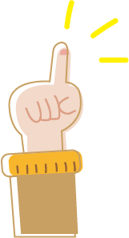

생활 속
사회 속

생활 속에서 실천되고 있는
대표적인 탄소중립 실천법은
무엇이 있을까요?
탄소다이어트란?
: 보통 우리는 쓰레기줄이기, 물 절약하기 같은
일반적행동을 생각하지만,
실생활속에서 탄소배출을 줄이는 방법은
매우 다양합니다.
우리는 이것을 ‘탄소다이어트’ 라 부릅니다.
난방온도 2℃ 낮추고 냉방온도 2℃ 높이기
가전제품 대기 전력 차단하기
주기적으로 보일러 청소하기
창틈과 문틈 바람막이 설치하기
새활용, 재활용 제품 이용하기
비닐 사용 줄이기
고효율 전자기기 사용하기
승강기 격층 운행하고 계단 이용하기
컴퓨터 절전기능 이용하기
저탄소 식단 운영하기
기업 내 녹색제품 구매제도 운영하기
공용차량 -> 전기/수소차 교체하기